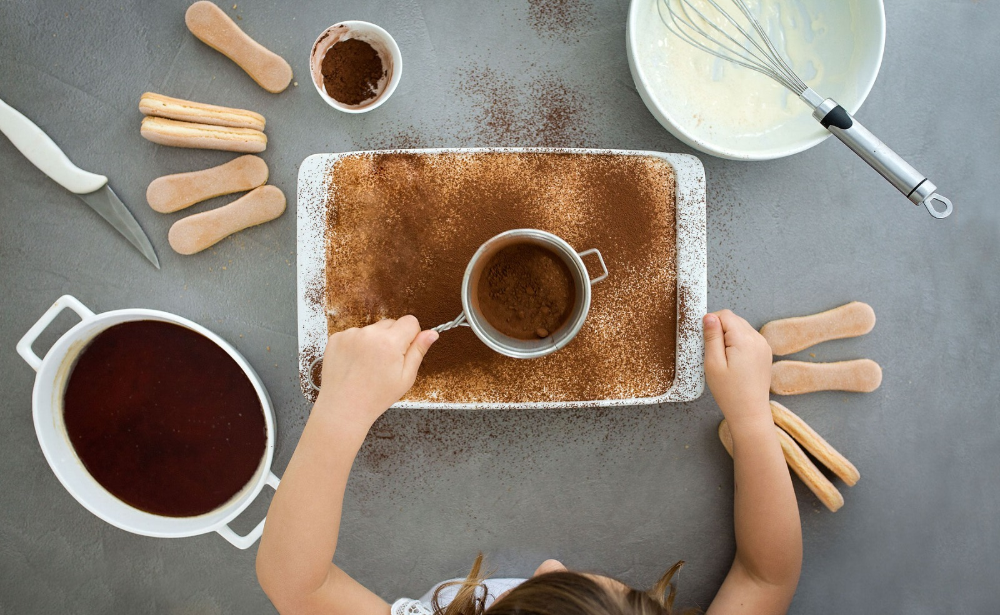
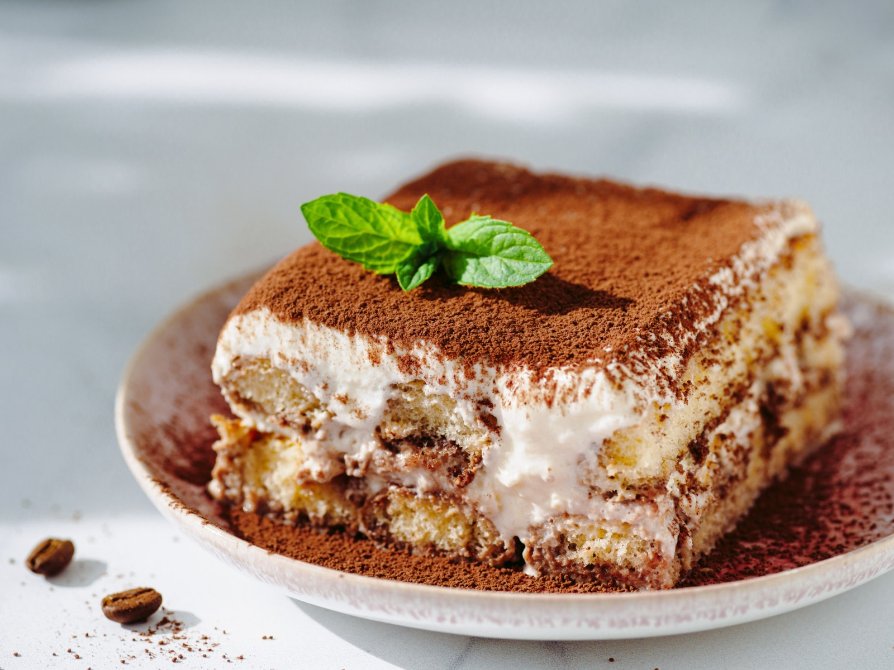

Tiramisú
Ingredientes
- 1 pacote de biscoitos champangne;
- 500 g de queijo mascarpone (pode substituir com 500 g de requeijão cremoso tipo catupiry);
- 250 ml de creme de leite fresco;
- 3 gemas;
- 150 g de açúcar;
- 1 cálice de conhaque (opcional);
- 2 xícaras de café frio;
- Chocolate em pó.

Modo de Preparo
- Bata o creme de leite na batedeira até obter um chantily firme.
- Reserve.
- Bata o açúcar com as gemas e o conhaque por 3 minutos.
- Acrescente o chantily, o mascarpone e misture bem.
- Molhe rapidamente os biscoitos no café (um a um) e coloque em um refratário formando uma camada, coloque por cima uma camada do creme, faça mais uma camada de biscoitos molhados no café e por último mais uma camada de creme.
- Para finalizar polvilhe chocolate em pó amargo.
- Leve à geladeira por no mínimo 3 horas e sirva.
